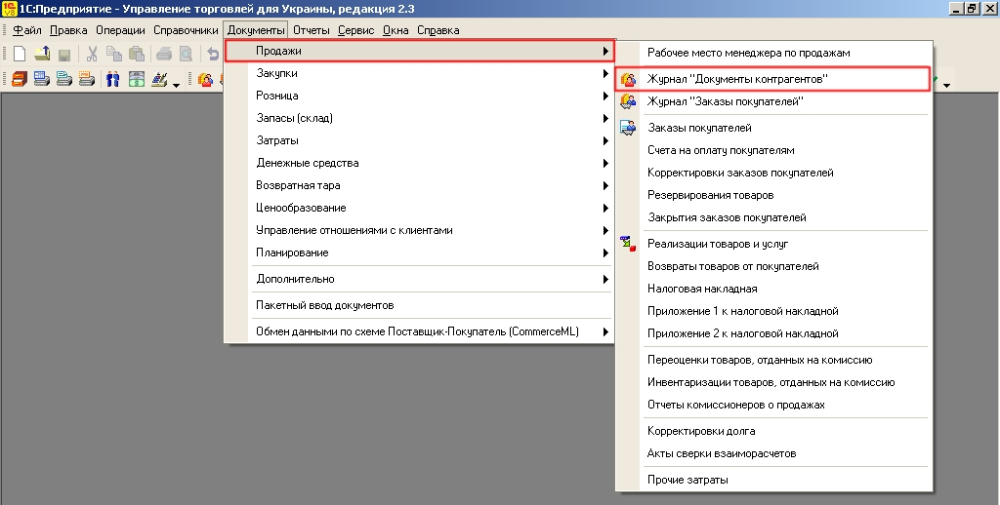
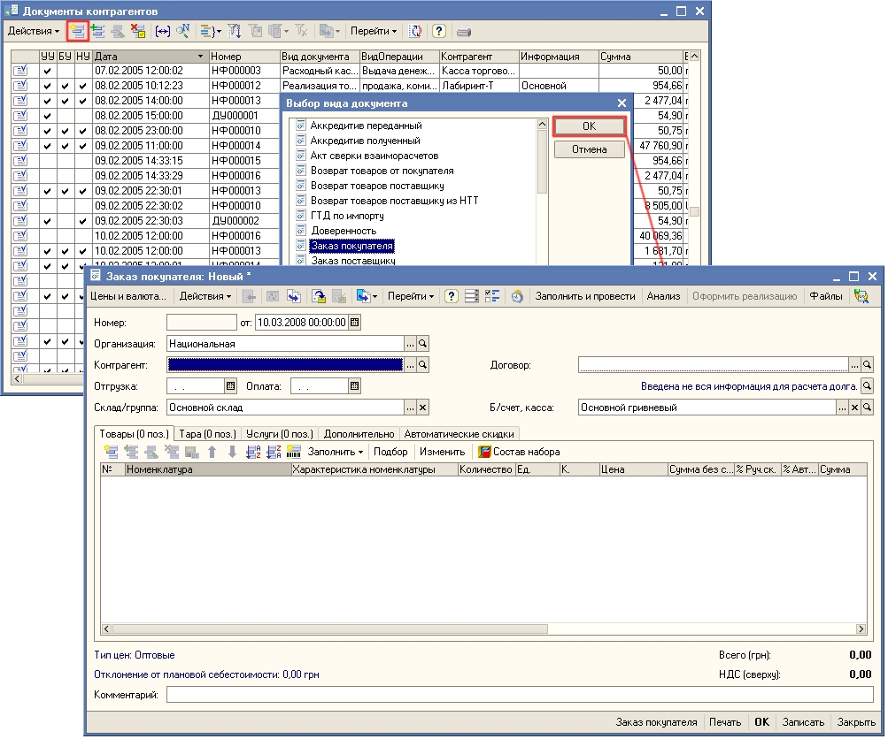
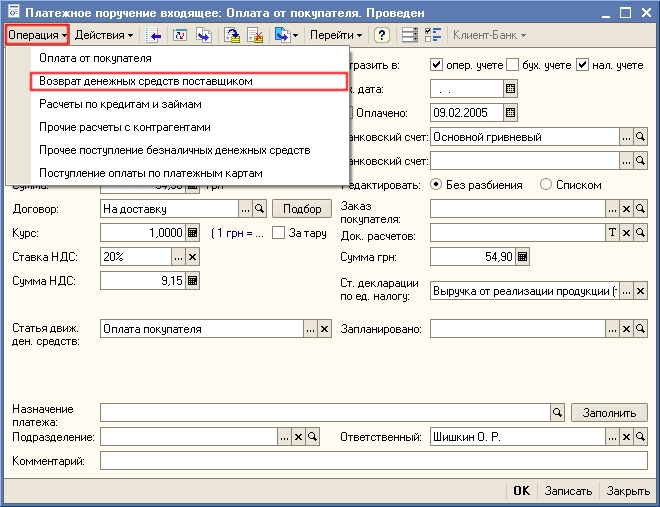

Основным способом регистрации торговых операций (покупка и продажа товаров, оплата поставщику, списание товаров и т.д.) в «Управление торговлей для Украины» является ввод документов. Документы доступны из главного меню программы. Для каждого пользователя может быть установлен свой интерфейс в зависимости от той роли, которую он выполняет в торговом предприятии: Управление продажами, Управление закупками и т.д.
При этом состав пунктов главного меню и состав картинок в каждом интерфейсе различен.
Примечание.
При рассмотрении торговых операций указание пунктов меню будет ориентировано на то, что у пользователя установлен Полный интерфейс.

Примечание.
При рассмотрении торговых операций указание пунктов меню будет ориентировано на то, что у пользователя установлен Полный интерфейс.
Все документы сгруппированы в журналы или списки документов. В списках хранятся документы только одного вида, а в журналах документы различных видов. Например, в журнале Документы контрагентов хранятся все документы, которые были оформлены с клиентом: заказы покупателей, накладные, платежные документы. Документы одного вида объединены в списки: Заказы покупателей, Реализация товаров и услуг, Приходные кассовые ордера и т.д.
Для быстрого вызова журнала или списка документов предназначены пиктограммы.
Ввод нового документа может производиться, как из журнала, так и и из списка документов. Ввод нового документа осуществляется при нажатии на кнопку  . При вводе нового документа из журнала предварительно надо выбрать вид вводимого документа.
. При вводе нового документа из журнала предварительно надо выбрать вид вводимого документа.

Один документ может быть предназначен для регистрации нескольких видов торговых операций. Разным операциям соответствуют разные наборы вводимых данных и разные правила проведения документа. Поэтому вид торговой операции следует устанавливать перед началом заполнения документа кнопкой Операция командной панели формы документа. Например, документ Платежное поручение входящее предназначен для регистрации следующих видов операций: Оплата от покупателя, Возврат денежных средств поставщиком, Расчеты по кредитам и займам и т.д.

Документ можно записать в информационную базу (кнопка Записать) и провести (кнопка ОК).
| ПРИМЕЧАНИЕ Запись документа без проведения означает, что документ подготовлен предварительно для регистрации торговой операции в будущем. При проведении документа фиксируется факт совершения торговой операции (отгрузка товаров со склада, списание денежных средств из кассы для выплаты подотчетному лицу, возникновение задолженности перед поставщиком и т.д). |
Большинство документов при нажатии на кнопку ОК делают записи в различных учетных регистрах, например изменяют остатки товаров на складах предприятия или изменяют сумму задолженности клиента . Эти записи называются «движениями» документа. Список учетных регистров, по которым документ делает движения, можно увидеть, нажав на кнопку Перейти в командной панели формы документа (или списка документов).
Следующий раздел: «Установка настроек для быстрого оформления документов»